Database og MySQL
Entiteter · attributter · relationer · kardinalitet · associativer · notation
Kapitel 2 · Grundlæggende programmering og database · DMU
Overblik
Hvorfor modellen er det vigtigste skridt — og hvad forretningsregler styrer
Typer, instanser, stærke og svage entiteter samt attributklassifikation
Relationsgrader, associative entiteter, min./maks.-kardinalitet og notation
01
En E-R-model er broen mellem forretningens sprog og databasens tabeller. Den skal bygges rigtigt fra starten.
Grundlaget
En fejl i datamodellen koster typisk 10–100 gange mere at rette, når databasen er i drift.
Mange udviklere og forretningsledere anser datamodellering for den vigtigste del af udviklingsprocessen
Modellen gør det muligt for forretning og teknikere at tale om de samme begreber
E-R-modellen oversættes senere direkte til tabeller, nøgler og relationer
Modellen er levende dokumentation af, hvad organisationen ønsker at gemme
Grundlaget
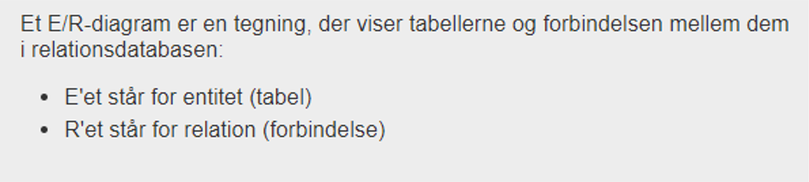
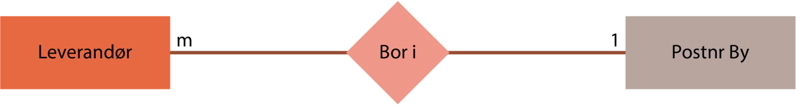
ISBN: 9788761696670 – Erhvervsinformatik · Copyright forfatterne og Systime A/S 2020
Grundlaget
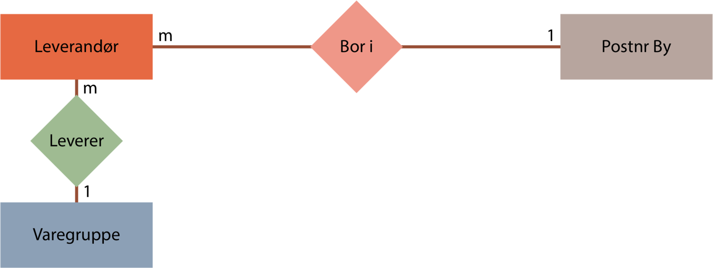
ISBN: 9788761696670 – Erhvervsinformatik · Copyright forfatterne og Systime A/S 2020
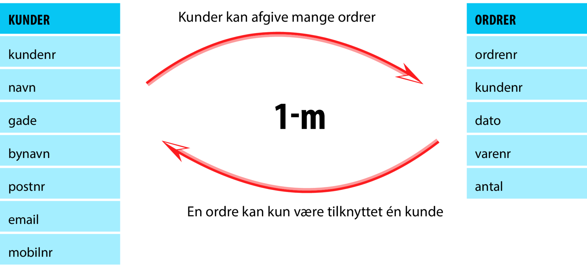
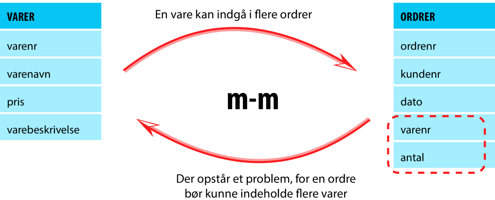
Vi løser dette ved at opbygge en ny tabel med relevante data. Denne tabel skal oprettes mellem de to tabeller, der har m-m relationen, hvorefter vi i stedet får to nye 1-m relationer.
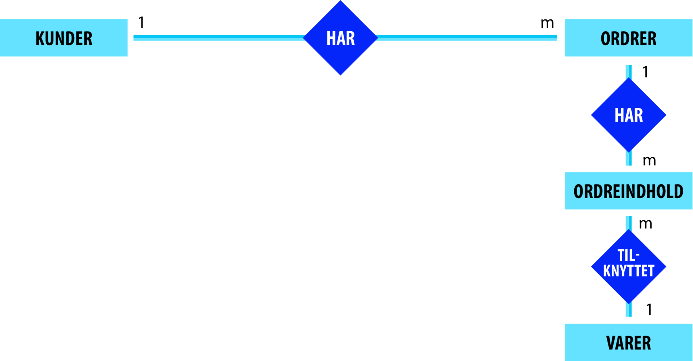
Nøgler
Primærnøglen er det felt, der entydigt identificerer hver post i en tabel. Uden primærnøglen vil der ved søgning i databasen være tvivl om, hvilken post vi præcis ønsker at identificere.
Primærnøgle – det felt, der entydigt identificerer den enkelte post i databasen. Vi siger også, at primærnøglen gør hver post i tabellen unik.
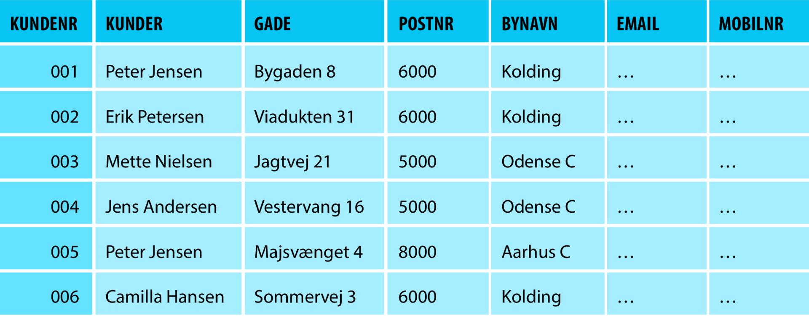
Nøgler
Det felt i »mange«-tabellen i en database, der er identisk med primærnøglefeltet i »en«-tabellen.
En primærnøgle og en fremmednøgle, der er koblet sammen, skal altid have samme datatype.
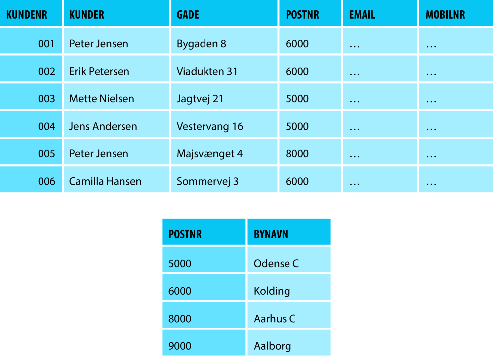
02
Relationerne binder entiteterne sammen — og kardinaliteten bestemmer, hvor mange der må være forbundet.
Notation
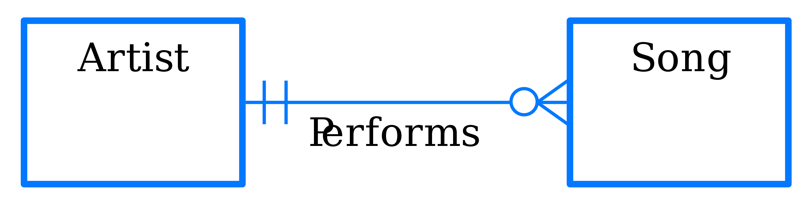
Notation
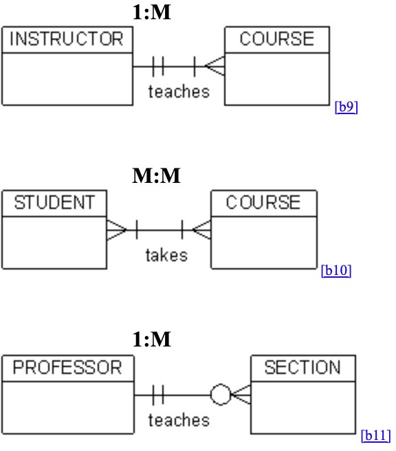
Notation
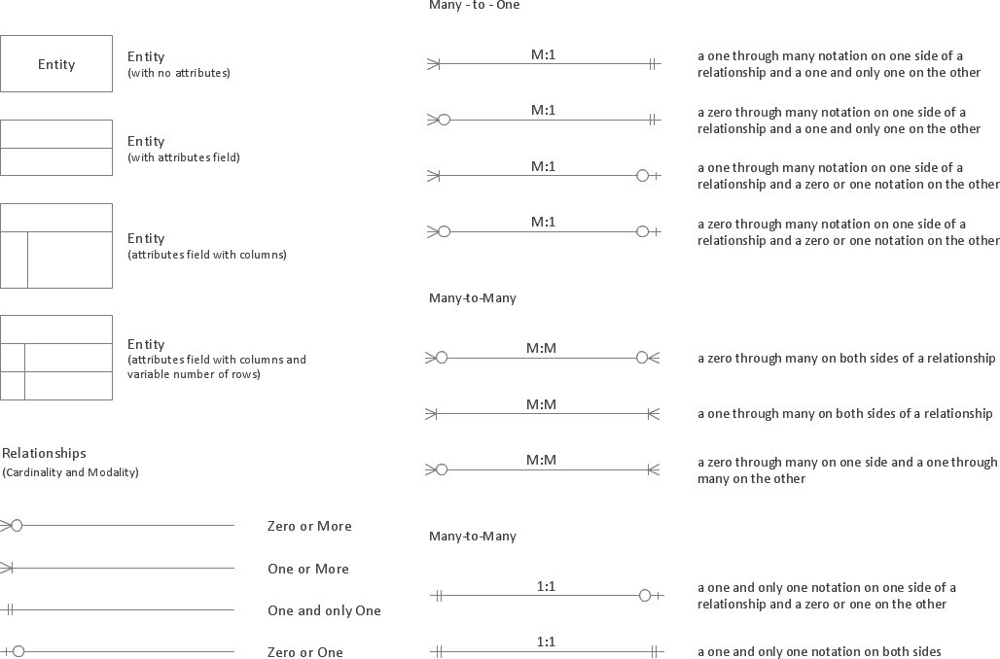
Notation
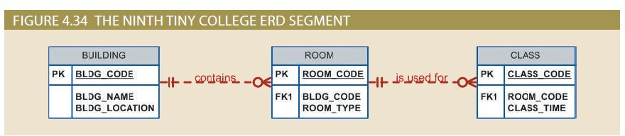
Øvelse
7.6
Opret et E/R-diagram for tabellerne tilknyttet idrætsforeningen
7.7
Opret et E/R-diagram for skoledatabasen
Eksempel
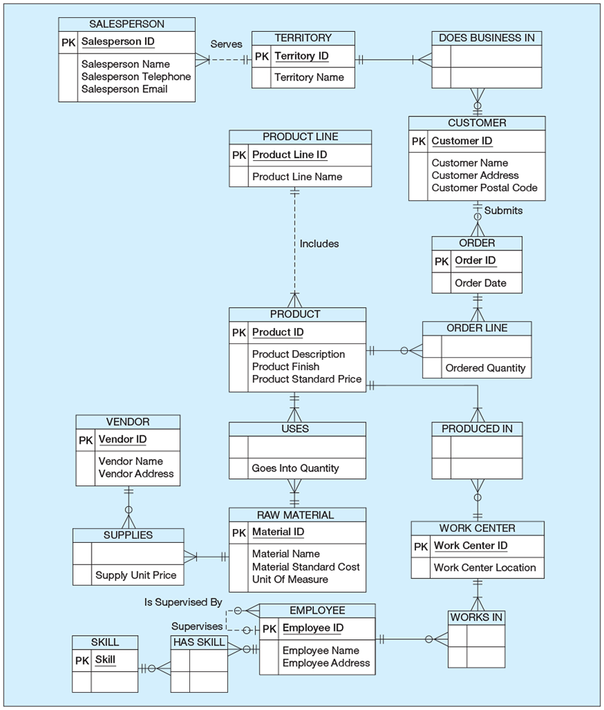
s. 25Notation
Opgave
En skole vil gemme data om kurser, studerende og lærere.
Hands-on
Følg disse trin i MySQL Workbench:
SQL
CREATE TABLE Laerer (
laerer_id INT PRIMARY KEY,
navn VARCHAR(100),
email VARCHAR(150)
);
CREATE TABLE Klasse (
klasse_id INT PRIMARY KEY,
klasse_navn VARCHAR(50),
laerer_id INT,
FOREIGN KEY (laerer_id)
REFERENCES Laerer(laerer_id)
);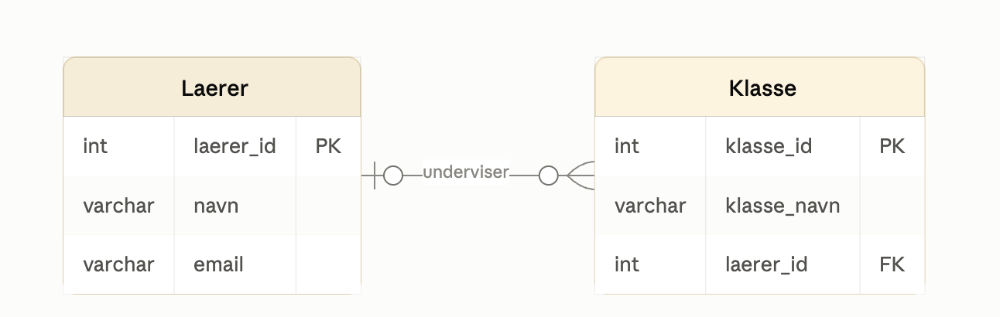
Gruppeprojekt
| Database | Difficulty | Best use |
|---|---|---|
| World | Beginner | Basic SELECT |
| albumn | Beginner | Albumn track |
| Sakila* | Intermediate | ER diagrams, foreign keys, views and stored procedures |
| Scratch | Beginner–intermediate | Business data and order |
| Northwind* | Beginner–intermediate | Orders, products and customers |
| Employees* | Intermediate– | Comp |
* kræver download fra MySQL · Gruppeprojekt: vælg en database, og forklar dens E-R-model for klassen.
← → naviger · O oversigt · F fuld skærm